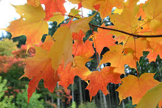
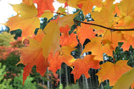
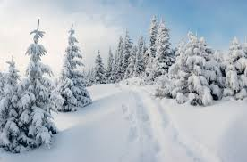
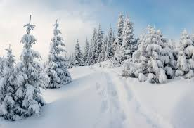
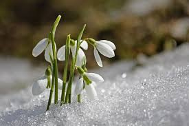
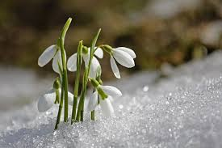

Времена года — части, которые выделяют в годовом цикле.
Календарные времена года — в большинстве стран мира принято деление года на четыре сезона, по три календарных месяца в каждом. Однако индийский календарь, например, делит год на 6 сезонов, по 2 месяца в каждом[1], календарь саамов — на восемь[2][3], а в древности в некоторых культурах был широко распространён трёхсезонный календарь. В Китае эпохи Инь в году было лишь два сезона: первая половина года — чунь (кит. упр. 春) и вторая половина года — цю (кит. упр. 秋), позднее означавшее в китайском языке смену сезонов года слово чуньцю (кит. упр. 春秋) стало обозначать историческую хронику[4]. Древнейший римский календарь содержал десять месяцев, причём первым месяцем считался март[5][6]. Нума Помпилий провёл серьёзную реформу календаря, до него римляне делили год на десять месяцев, начиная счёт с марта, и заканчивая декабрём. Согласно новому календарю, были введены два новых месяца — январь и февраль в честь богов Януса и Феба. Таким образом, календарь, введённый Нумой Помпилием состоял из двенадцати месяцев.
Астрономический механизм смены времён года.
Причиной смены времён года является наклон земной оси по отношению к плоскости эклиптики и вращение Земли вокруг Солнца. Без наклона оси продолжительность дня и ночи в любом месте Земли была бы одинакова, и днём Солнце занимало бы положение над горизонтом на одной и той же высоте в течение всего года. В наше время ось планеты образует с орбитальной плоскостью угол 66,56°[15][16].
Астрономически времена года разделены моментами осеннего равноденствия, зимнего солнцестояния, весеннего равноденствия и летнего солнцестояния.
В период между сентябрьским и мартовским равноденствиями (от 22 (23) сентября до 20 (21) марта) из-за наклона земной оси Северное полушарие обращено к Солнцу меньшую часть суток, поэтому северные широты получают меньше тепла и света, чем южные. Зимой дни становятся короче, а положение Солнца в полдень — ниже, чем в Южном полушарии, где в это время лето. Спустя полгода Земля переходит на противоположную точку своей орбиты. Наклон оси остаётся таким же, однако теперь Южное полушарие оказывается обращённым к Солнцу меньшую часть суток, там дни короче, Солнце в полдень — ниже, меньше и тепла и света. В Северном полушарии в это время лето. Резкие температурные пульсации сглаживаются за счёт колоссальной тепловой инерции атмосферы и поверхности планеты. Механизм нагрева и охлаждения напоминает Широтно-импульсную модуляцию — температура нагрева регулируется продолжительностью светового дня.
Из-за эллиптической формы земной орбиты времена года имеют разную продолжительность. Так, в Северном полушарии осень продолжается приблизительно 89,8 суток, зима — 89, весна — 92,8, лето — 93,6. В Южном полушарии — соответственно 92,8, 93,6, 89,8 и 89 суток[17].
Астрономический механизм смены времён года.
Причиной смены времён года является наклон земной оси по отношению к плоскости эклиптики и вращение Земли вокруг Солнца. Без наклона оси продолжительность дня и ночи в любом месте Земли была бы одинакова, и днём Солнце занимало бы положение над горизонтом на одной и той же высоте в течение всего года. В наше время ось планеты образует с орбитальной плоскостью угол 66,56°[15][16].
Астрономически времена года разделены моментами осеннего равноденствия, зимнего солнцестояния, весеннего равноденствия и летнего солнцестояния.
В период между сентябрьским и мартовским равноденствиями (от 22 (23) сентября до 20 (21) марта) из-за наклона земной оси Северное полушарие обращено к Солнцу меньшую часть суток, поэтому северные широты получают меньше тепла и света, чем южные. Зимой дни становятся короче, а положение Солнца в полдень — ниже, чем в Южном полушарии, где в это время лето. Спустя полгода Земля переходит на противоположную точку своей орбиты. Наклон оси остаётся таким же, однако теперь Южное полушарие оказывается обращённым к Солнцу меньшую часть суток, там дни короче, Солнце в полдень — ниже, меньше и тепла и света. В Северном полушарии в это время лето. Резкие температурные пульсации сглаживаются за счёт колоссальной тепловой инерции атмосферы и поверхности планеты. Механизм нагрева и охлаждения напоминает Широтно-импульсную модуляцию — температура нагрева регулируется продолжительностью светового дня.
Из-за эллиптической формы земной орбиты времена года имеют разную продолжительность. Так, в Северном полушарии осень продолжается приблизительно 89,8 суток, зима — 89, весна — 92,8, лето — 93,6. В Южном полушарии — соответственно 92,8, 93,6, 89,8 и 89 суток[17].
Лето
Одно из четырёх времён года, между весной и осенью, характеризующееся наиболее высокой температурой окружающей среды. В день летнего солнцестояния дни самые длинные, а ночи самые короткие. Дата начала лета варируется в зависимости от климата, традиций и культуры. Если в северном полушарии лето, то в Южном полушарии — зима, и наоборот. Состоит из трёх месяцев: в Северном полушарии — июня, июля и августа, в Южном — декабря, января и февраля.
Одно из четырёх времён года, между весной и осенью, характеризующееся наиболее высокой температурой окружающей среды. В день летнего солнцестояния дни самые длинные, а ночи самые короткие. Дата начала лета варируется в зависимости от климата, традиций и культуры. Если в северном полушарии лето, то в Южном полушарии — зима, и наоборот. Состоит из трёх месяцев: в Северном полушарии — июня, июля и августа, в Южном — декабря, января и февраля.
Осень
Осень (родственно др.-прусск. assanis «осень», гот. 𐌰𐍃𐌰𐌽𐍃 «жатва», этимологически — «время жатвы»; по толкованию Даля — от «осенять» — «затенять», то есть наступление сумрака) — одно из четырёх времён года, между летом и зимой. Осень — переходный сезон, когда заметно уменьшение светового дня, и постепенно понижается температура окружающей среды.

Осень (родственно др.-прусск. assanis «осень», гот. 𐌰𐍃𐌰𐌽𐍃 «жатва», этимологически — «время жатвы»; по толкованию Даля — от «осенять» — «затенять», то есть наступление сумрака) — одно из четырёх времён года, между летом и зимой. Осень — переходный сезон, когда заметно уменьшение светового дня, и постепенно понижается температура окружающей среды.

Зима
Одно из четырёх времён года, между осенью и весной. Основной признак этого времени года — устойчивая низкая температура (ниже 0 градусов по Цельсию) во многих районах Земли, на поверхность земли выпадает и ложится снег.

Одно из четырёх времён года, между осенью и весной. Основной признак этого времени года — устойчивая низкая температура (ниже 0 градусов по Цельсию) во многих районах Земли, на поверхность земли выпадает и ложится снег.

Весна
Весна́ — одно из четырёх времён года, переходный сезон между зимой и летом. Существуют различные методы определения начала и окончания весны, отличающиеся в зависимости от местного климата, культур и обычаев. Когда в Северном полушарии весна, то в Южном полушарии осень и наоборот. Основной признак этого времени года — устойчивая низкая температура (ниже 0 градусов по Цельсию) во многих районах Земли, на поверхность земли выпадает и ложится снег. Смена времён года обусловлена наклоном оси вращения Земли к плоскости эклиптики. 
Весна́ — одно из четырёх времён года, переходный сезон между зимой и летом. Существуют различные методы определения начала и окончания весны, отличающиеся в зависимости от местного климата, культур и обычаев. Когда в Северном полушарии весна, то в Южном полушарии осень и наоборот. Основной признак этого времени года — устойчивая низкая температура (ниже 0 градусов по Цельсию) во многих районах Земли, на поверхность земли выпадает и ложится снег. Смена времён года обусловлена наклоном оси вращения Земли к плоскости эклиптики. 